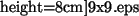

For each scan a file with this name is produced (S is the scan number), which contains:
# X,Y - lateral position (in A)
# A - oscillation amplitude (in A)
# DEF - frequency shift (Hz)
# Ediss - dissipation energy per cycle (eV)
# appr - distance of closest approach (A)
#
# X Y A DEF Ediss appr
Difference with the singnal.dat file is two-fold: firstly, the oscillation number is not printed; secondly, different files are produced for each stage.
As an example, we show in Fig. 13 the 2D topology image of the MgO (001) surface calculated by the code using the 9x9 force field (section 9.3).
|
 |